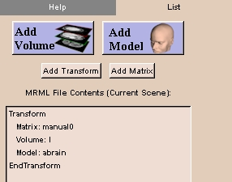

The List tab shows a list of the items comprising the current scene, which includes all loaded volumes.
To use the List tab:
- Click Data, then click the List tab. This panel appears.

- If you right-click on any item in the list, a drop-down menu appears that lets you edit, cut, paste, or delete the item.